欧游札记之英国大学路(第三日 曼联主场&伯明翰大学)
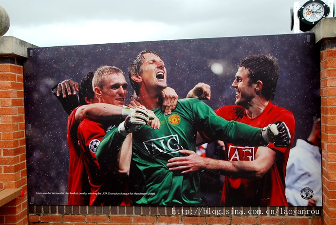
第三日 曼联主场&伯明翰大学
早上六点起床散步，昨夜大雨滂沱，一早出门仍见小雨淅淅沥沥，所以仅绕酒店周边转了一圈，不过都是物流和工业区，无特别的观感。
上午大巴车直奔曼彻斯特，观曼联主场老特拉福德球场，同团的团友购曼联球队纪念品和球衣的热情汹涌澎湃，尽管东西价格不菲且存在“Made
in China”的可能，但诸多游客仍然心无旁骛乐此不疲，不由令人慨叹国人疯狂的海外购物消费力和拳拳爱子之心。
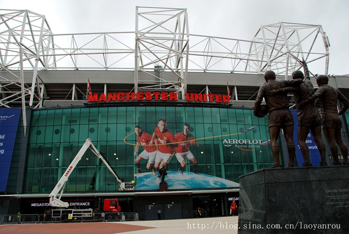
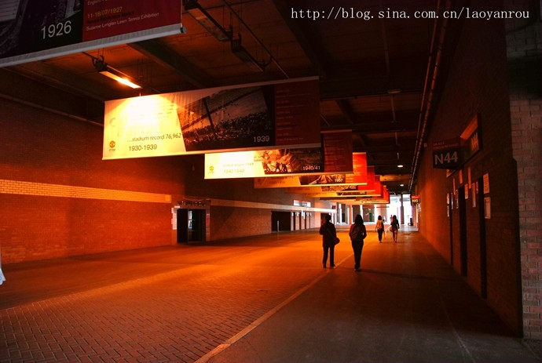
位于市中心的阿尔伯特广场是曼城为纪念维多利亚的丈夫而修建的，广场旁一幢规模颇宏伟的市政大厅由于外部正准备曼城国际节而封闭了部分参观区域，周边环境略显凌乱，却也丝毫不影响我们进去一探究竟的兴致。市政厅未开放区域至今仍作为政府官员行政办公之地，而对外开放的一楼大堂则极具哥特式教堂风格，内部陈列摆设着一些纪念本市名人名事的艺术品及纪念品，如焦耳的大理石雕像等，象这样兼具极高历史和文化价值的古老建筑仍坚持不懈地为城市公共事业提供服务并同时向公众保持开放确实需要一定的管理魄力。广场附近有一家哥特式建筑风格的米德兰酒店，因罗斯和莱斯在此签署合约创立赫赫有名的罗斯莱斯公司而远近闻名，而且这也是伊丽莎白二世女王唯一在宫廷外用餐的酒店，酒店曾毫不犹豫地拒绝过衣冠不整的大名鼎鼎的披头士乐队入内，其严谨的管理风格和一丝不苟的礼仪准则确实令人敬佩。
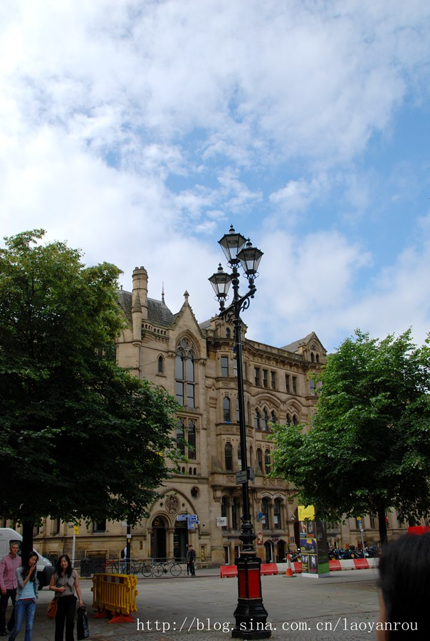
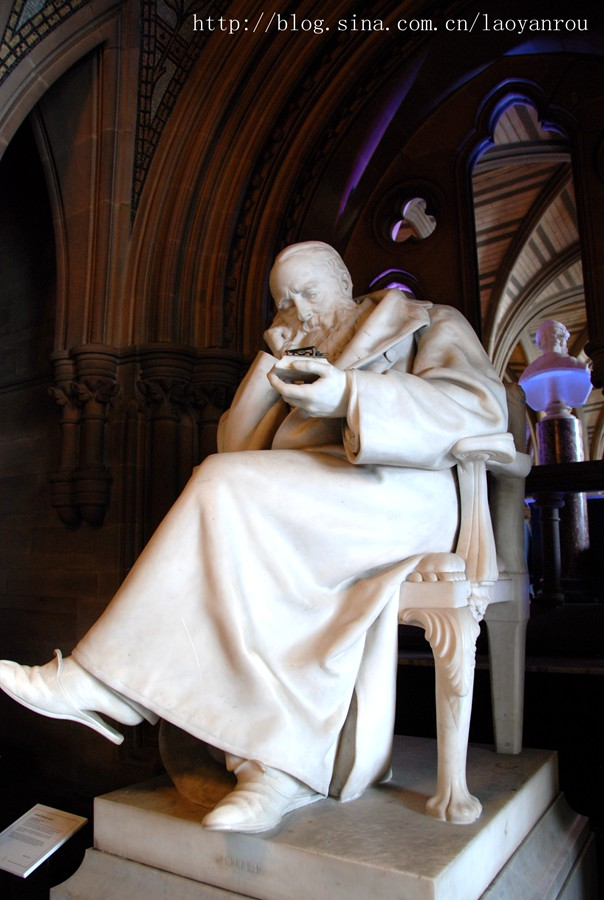
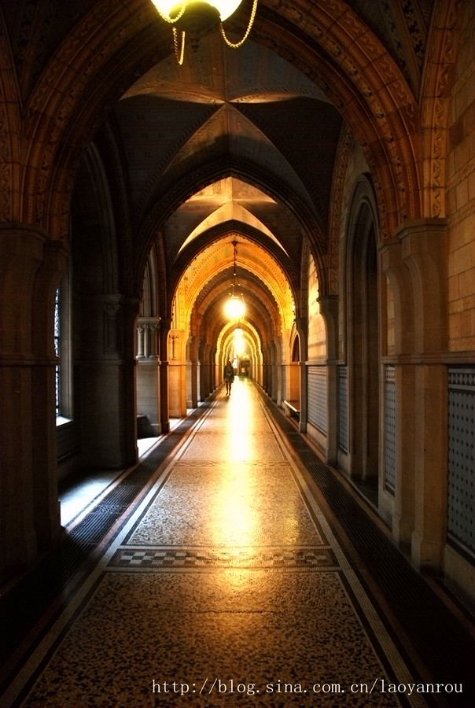
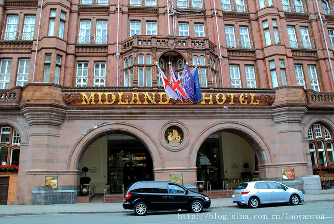
伯明翰大学在全英前十学校里面排名第七，其知名校友主要有英国前首相张伯伦、中国著名地质学家李四光等，属英格兰中部六所红砖大学之一，伯明翰大学的校风比较开明，颇受企业家家长的青睐，走进校门后上遇见不少中国留学生，青春阳光而充满朝气，实乃国家未来之希望。学校建立于1901年，建校历史不算非常长，校内的主要教学建筑是环绕一圈的近代红砖欧式建筑，中部一高耸的红砖钟楼直插云霄，标榜出其与众不同的校园风格。
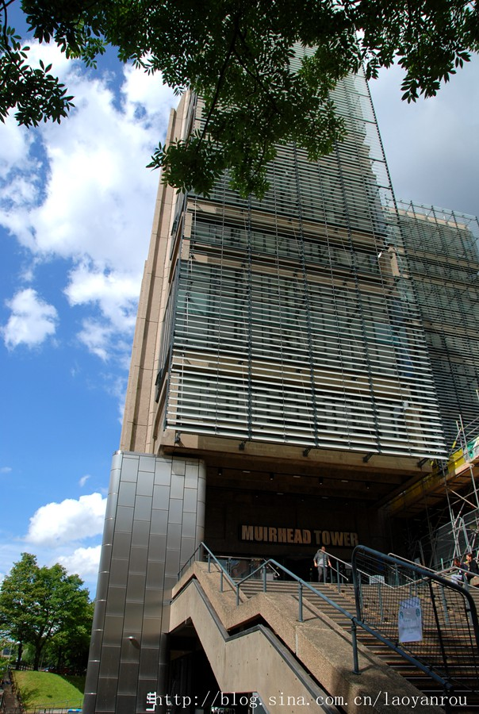
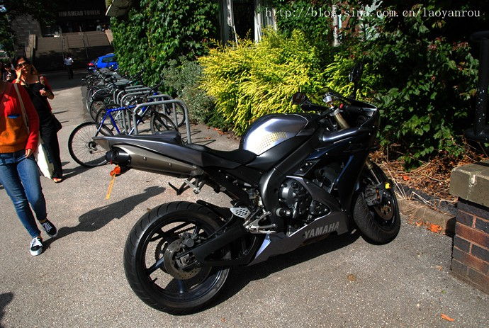
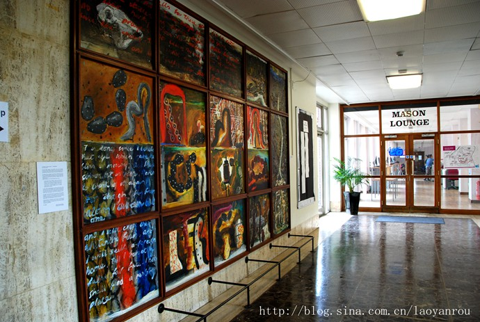
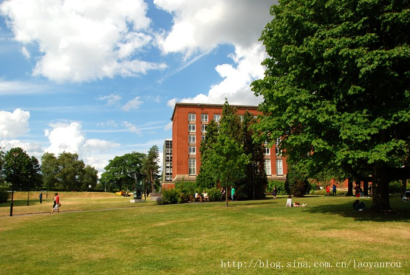
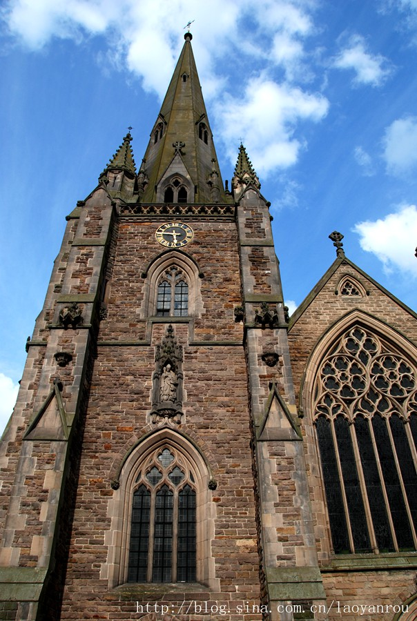
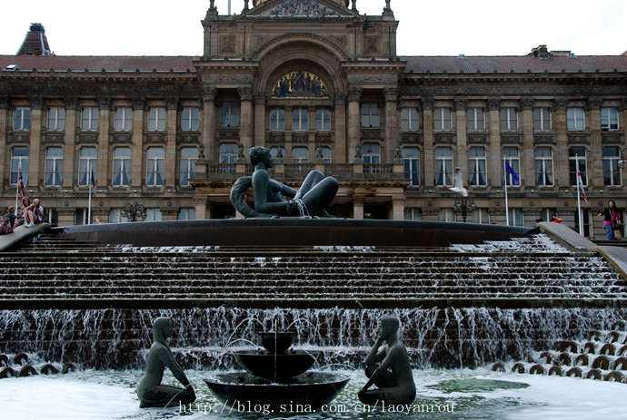
晚上入住伯明翰附近Radioson酒店，酒店座落在别墅区，明早的景致值得期待。